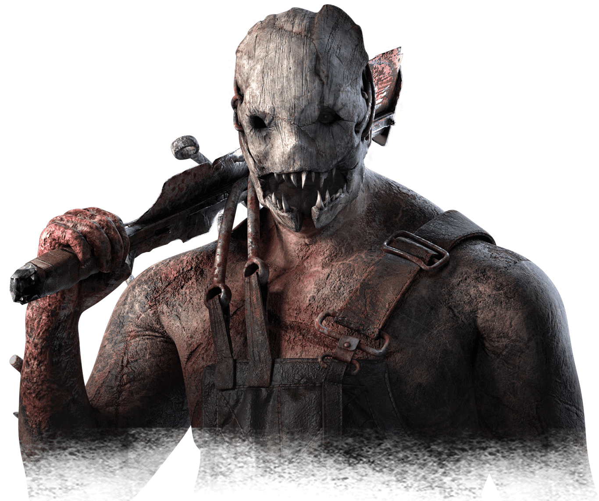

Killer: Trapper
História
Antes de ser abduzido pela entidade Evan era filho de um magnata dono de uma empresa de mineração, o Evan admirava muito a liderança do pai que se chamava Archie MacMillan que se comportava como um homem de postura e respeito, mas com o tempo o filho acaba percebendo que o pai estava ficando cada vez mais diferente do normal, com o tempo o pai estava ficando mais agressivo com seus trabalhadores. Enquanto isso o Evan estava fazendo o hobbie que ele mais gostava de praticar, desenhar, ele se dizia ter talento mas escondia as artes dele de seu pai, pois o pai dele falava que desenhos eram coisas de pessoas fracas. Sendo levado ao local de trabalho de seu pai, Evan ouvia as histórias de Archie no dia em que ele e seu tio caçavam ursos, em uma dessas caçadas o tio foi usado como sacrifício para que archie matasse o urso pelas costas, estranhamente o pai falava essa história com uma sensação de que a morte do tio fosse planejada, no fim das contas Evan não acreditava nelas, tem um ditado popular que se falava:“tal pai, tal filho”, e com ela percebia que o Evan também sentia de forma doentia uma apreciação ao pai, mostrando que o filho também estava tendo traços de loucura, quando archie enlouqueceu de vez, tanto o pai quanto o filho foram conhecidos por executar o maior massacre da história moderna, levando mais de 100 trabalhadores a um túnel de mineração e acionando explosivos, levando todo o seu patrimônio junto a destruição. Não houve provas de que foram eles mesmos que causaram isso, depois disso não se sabia o que aconteceu tanto com Evan quanto archie depois disso.
Poder
No início de cada partida Trapper nasce e só pode carregar na mão 2 armadilhas de urso, no mapa do jogo vão nascer aleatoriamente mais 8 armadilhas de urso desarmadas, Trapper pode armar e desarmar as armadilhas se um sobrevivente pisar em uma armadilha armada, o Trapper será notificado, o sobrevivente sofrerá dano e ficará preso nela. Ele pode ficar preso na sua propria armadilha caso pise nela.
Perks
Agitação
Aumenta sua velocidade de movimento durante o transporte de corpos em 6/12/18 %. Ao transportar um corpo, seu Raio de Terror é aumentado em 6/8/12 metros.

Presença desconcertante
Sobreviventes dentro do Raio de Terror têm 6/8/10% a mais de chance de ter skills checks ao executar ações, além disso, As zonas de sucesso são reduzidas em 40/50/60 %

Força Brutal
Destrua barricas e danifique geradores 10/15/20 % mais rápido